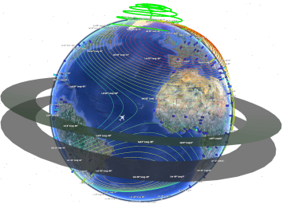

Welcome to the KML Toolbox!
_ ____ __ _ _____ _ _ | |/ / \/ | | |_ _|__ ___| | |__ _____ __ | ' <| |\/| | |__ | |/ _ \/ _ \ | '_ \/ _ \ \ / |_|\_\_| |_|____| |_|\___/\___/_|_.__/\___/_\_\
Contents

Thanks for downloading the KML toolbox!
For some cool examples on how to use the KML toolbox, please check the file RunTests.m located in the folder kmltoolbox\help
This class-based toolbox allows you to create many different plots in Google Earth, by automatically creating the required xml-based kml files without any complicated user interaction.
With it, you can create:
- line plots, scatter plots
- 2D and 3D contours
- 2D and 3D polygons
- quiver plots
- write text in a given point
- place and animate 3D models
- overlay images
- transfer more complex figures as images
- create nested folders to classify and aggregate your plots
If you enjoy it, just drop me an email at <mailto:kml@rafael.aero kml@rafael.aero> saying for what you're using it :-)
To learn how to create an instance of the kml toolbox, check here first
Useful functions
Plotting functions
This file is part of the kml toolbox. Copyright 2012 Rafael Fernandes de Oliveira (rafael@rafael.aero)